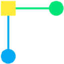

RAG and document tools for research agents
Retrieval tools that let agents search documents, PDFs and knowledge bases and answer from them (RAG). Of the 796 tools on our research page, 72 fit this narrower job. By pricing: 43 open source, 1 source-available, 10 free or freemium, 18 pricing on the maker's site. The most-starred open repos here are Firecrawl (196,925 stars), Crawl4AI (86,582 stars), MemPalace (60,133 stars). Most come from the MCP servers (32), memory & RAG (12), research (8) categories.
Updated
Firecrawl
Firecrawl is an AGPL-3.0 web data API for AI agents, open source and available as a hosted service: Search returns full page content for web results, Scrape turns any URL into clean Markdown, HTML, screenshots or structured JSON, Crawl and Map cover whole sites, Interact clicks, scrolls and types before extracting, and Parse converts PDFs and DOCX files. It handles proxies, rate limits and JavaScript-heavy pages for you, and connects to any agent or MCP client with a single command.
Added
Crawl4AI
Crawl4AI is an Apache-2.0 web crawler that turns pages into clean, LLM-ready Markdown, extracts structured JSON and handles browser automation for RAG pipelines and agents, runnable yourself with Python or Docker. Crawl4AI Cloud offers the same capabilities as a hosted scrape, extract and search API with managed browsers and proxies, plus setup for Claude Code, Cursor and Codex.
Added
MemPalace
MemPalace is an MIT-licensed, local-first memory system for AI agents that stores conversation history as verbatim text (it does not summarize or paraphrase) and retrieves it with semantic search. People and projects are organised as wings, topics as rooms and original content in drawers so searches can be scoped, and the retrieval backend is pluggable (ChromaDB by default) with no API calls required. Official docs are at mempalaceofficial.com; v3.11.0 shipped Oct 14, 2026.
Added
PrivateGPT
PrivateGPT is an Apache-2.0 API layer that turns local models into private AI applications: it speaks a Claude-style messages API and adds file ingestion, retrieval with citations and agentic RAG, built-in tools (web search, web fetch, code execution), custom tools, MCP connectors and structured access such as text-to-SQL. It does not run models itself; it connects to any OpenAI-compatible inference server (Ollama, llama.cpp, vLLM and others) and ships a workbench UI at /ui for testing.
Added
MindsHub
MindsDB's agent workspace for research, analysis, documents and coding, with a model router, a scoped vault for connected data and swappable open-source agent harnesses.
Added
PDFMathTranslate
PDFMathTranslate (pdf2zh) translates scientific PDFs while keeping the original layout: formulas, charts, tables of contents and annotations stay in place and it outputs bilingual or translated-only files. It works with Google, DeepL, OpenAI, Ollama and other translation services, adds experimental OCR and an ultrafast mode for native-text PDFs, and runs as a CLI, a desktop or web GUI, Docker, an MCP server or a Zotero plugin. AGPL-3.0; an EMNLP 2025 demo paper.
Added
Khoj
Khoj is an AGPL-3.0, self-hostable second brain. The repository says you can ask questions of your own documents or the web, run custom agents and scheduled automations, and point it at a cloud or local model. GitHub listed 38,182 stars on 20 Nov 2026, last pushed 2 Aug 2026. The company site also presents Pipali, a desktop coworker in beta, and Open Paper, a research reading bench.
Added
ChatDev
ChatDev is an Apache-2.0 multi-agent platform from OpenBMB and Tsinghua. ChatDev 2.0 (DevAll) is a zero-code system: you define agents, workflows and tasks in configuration and it orchestrates them for jobs such as data visualization, 3D generation and deep research. The original ChatDev 1.0, kept as a legacy mode, simulates a virtual software company where CEO, CTO, programmer and tester agents design, code, test and document an app through structured chats.
Added
ScrapeGraphAI
ScrapeGraphAI is an MIT-licensed Python library for LLM-driven web scraping: you describe the data you want in plain language and it builds a graph pipeline that fetches a page, website or document (HTML, XML, JSON, Markdown) and returns structured output, with ready graphs for single pages, multi-page search and scripted scrapers. It works with hosted models such as OpenAI or with local ones through Ollama. The same team runs a hosted API at scrapegraphai.com for scraping at scale.
Added
STORM
STORM is Stanford OVAL's MIT-licensed research system that writes Wikipedia-style, citation-backed articles from scratch: it researches a topic by asking questions from several perspectives against web search, builds an outline, then writes the full report with references. Co-STORM adds a collaborative mode where you join the discussion between AI agents to steer the research. It installs as the knowledge-storm Python package, supports many LLMs through LiteLLM and can ground on your own documents through a vector store.
Added
GPT Researcher
GPT Researcher is an Apache-2.0 open deep-research agent that investigates any topic on the web or in your local documents and writes a detailed, cited report. Planner and execution agents split the task into research questions and run them in parallel, context filtering keeps only useful sources, recursive deep research goes both broad and deep, and a multi-agent mode carries work from planning to publication. It works with most LLM providers and runs as a Python package, Docker app, web UI or MCP server.
Added
Chroma
Open-source search and vector database widely used for agent memory and RAG.
Added
Agent Zero
Agent Zero is an open-source AI agent that gets its own Linux computer: inside a Docker sandbox it uses a terminal, a browser and desktop apps to research, write and run code, and create and edit documents, building its own tools and correcting itself as it goes. You watch and can step in through a web UI, connect local folders when needed, and choose the models it uses. It is actively developed, with v2.16 released in November 2026.
Added
Zvec
Zvec is Alibaba's open-source, in-process vector database that embeds directly in your application for low-latency similarity search in RAG and agent memory, with HNSW, IVF and DiskANN indexes, quantisation, full-text search and builds for Linux, macOS, Windows, Android and iOS.
Added

txtai
All-in-one Python framework for semantic search, LLM orchestration and agents built on an embeddings database of vector, graph and relational indexes.
Added
LanceDB
Open-source multimodal vector database for search, RAG and agent memory.
Added
Activeloop
Deep Lake, a multimodal database for AI that stores vectors, images, text and video so agents and RAG apps can search and retrieve them.
Added
Apache Pinot
Apache Pinot is an Apache-2.0 real-time OLAP database built to answer analytical SQL queries in milliseconds over fresh streaming and batch data, at very high query concurrency. It ingests from Kafka, Pulsar or Kinesis and from object storage, supports star-tree and other indexes, upserts and joins, and adds vector search, which makes it a backend for user-facing analytics and for agents that need fast, structured answers over live data. It runs self-managed or as a managed service from vendors such as StarTree.
Added
LobsterAI
NetEase Youdao's desktop agent for data analysis, slides, documents and web research.
Added
Dossier
Dossier is an AGPL-3.0, self-hosted job-search app that keeps your career history in one profile and, for each posting, shows how you match and drafts a tailored resume and cover letter using only facts from your profile. You refine them in chat, download PDFs and track applications from draft to offer. It uses a model of your choice, including local ones through Ollama or LM Studio, and stores data in your own PostgreSQL or SQLite.
Added
Memgraph
In-memory graph database used as the graph layer for GraphRAG pipelines and agent memory, with Cypher queries plus vector and text search.
Added
SimpleMem
Research-backed lifelong memory library for LLM agents that stores, compresses and retrieves text and multimodal memories, usable over MCP.
Added
Finance Skills
Finance Skills is an MIT-licensed collection of Agent Skills for financial analysis and trading research, installable as Codex plugin groups or with npx skills for other agents, and grouped into market analysis and data-provider packs, some with bundled MCP servers; documentation and demos are at skills.himself65.com, and the README stresses it is for education, not financial advice.
Added
seekdb
AI-native search database for agent storage combining vector, text and structured data.
Added
Papersgpt For Zotero
Papersgpt For Zotero is an MCP server that gives agents a way to handle professional AI research tool for Zotero: chat with PDFs, whole-library search, Literature.
Added
Claude Scientific Writer
K-Dense's general-purpose scientific writing agent for Claude that drafts research papers and documents.
Added
Grounded Docs MCP
Self-hosted MCP server that indexes up-to-date documentation from websites, GitHub, npm and PyPI so coding agents query the right version.
Added
MemFree
Hybrid AI search engine that answers from your knowledge base and the web, and generates UI pages.
Added
SAG-Wiki
SAG-Wiki is an MIT desktop knowledge base for macOS and Windows that indexes and searches your local files without LLM calls, then answers questions with citations you can trace to the source. PDFs become searchable before background OCR and table extraction finish, Office and RTF files are indexed too, and an agent skill lets Claude Code and other agents query the same library.
Added
Ref
Token-efficient documentation search for coding agents.
Added
Annas MCP
MCP server and CLI tool for searching and downloading documents from Anna's Archive
Added
NornicDB
Nornicdb is a distributed low-latency, Graph+Vector, Temporal MVCC with all sub-ms HNSW search, graph traversal, and writes. Using Neo4j Bolt/Cypher and qdrant's gRPC means you can switch with no.
Added
MOVO
MOVO Community Edition is a self-hosted enterprise agent platform that takes DeepSeek Harness agents from experiments into production. It wraps the DSH runtime, skills, tools and MCP ecosystem in a deployable workspace with enterprise knowledge bases, deep research, content generation, vibe coding and browser automation, plus identity and access control, admin consoles, governance and file delivery. It starts locally with Docker in about five minutes.
Added
Haiku.Rag
Haiku.Rag is an MCP server that gives agents a way to handle local-first agentic RAG with citations - hybrid search, reranking, multimodal document retrieval.
Added
FinSight AI
FinSight AI is an open-source agent project that helps builders handle AI equity research agent with resilient workflows, evidence-grounded RAG, versioned reports.
Added
Kition
Kition is an open-source desktop office workspace with an AI agent built in. It combines documents, data tables and a whiteboard for design work in one app, and its tool-using agent can research the web, write and translate, organise records and produce editable brand assets, with visual workflows to chain the steps together.
Added
Molio Knowledge Base
Molio Knowledge Base is an MCP server agents call to read-only access to your Molio local knowledge base: search, read, browse.
Added
Claude Skills Mcp
Claude Skills Mcp is an MCP server agents call to searching and retrieving Scientific Agent Skills using vector search.
Added
Kindly Web Search Mcp Server
Kindly Web Search Mcp Server is an MCP server that gives agents a way to handle web search + robust content retrieval for AI coding tools (Claude Code.
Added
Lattice
Lattice is an open-source agent project that helps builders handle local-first, agent-first LaTeX writing app for macOS: live PDF, annotations, papers.
Added
Papilot
Papilot is an MIT AI LaTeX editor that lets you work on the typeset PDF instead of the .tex source: you mark a sentence, equation or figure on the page, say what you want changed, and it edits the LaTeX and shows the result typeset, including visual diffs. It is aimed at papers, theses, books and slides, with desktop releases and an npm package.
Added
Tw Legal Rag
Tw Legal Rag is an MCP server that gives agents a way to handle taiwan law MCP server: 22M court judgments, statutes, agency rulings, with citation.
Added
Workopia Mcp
Workopia Mcp is an MCP server that gives agents a way to handle workopia - free MCP for global job search, PDF resume builder.
Added
Casecite
Casecite is an open-source agent project builders use to open-source, self-hosted legal RAG caselaw research & document analysis platform.
Added
Football Docs
Football Docs is an MCP server that gives agents a way to handle searchable football data provider documentation for AI coding agents.
Added
GitHits
GitHits is an MCP server agents call to search public open-source code, documentation, metadata, vulnerabilities, changelogs, and examples.
Added
VideoDB
A serverless video database to easily store, index, search, and stream videos. VideoDB uses AI to automatically tag scenes, generate accurate transcriptions, and quickly retrieve video moments with simple queries.
Added
Mcp Server Webcrawl
Advanced search and retrieval for web crawler data. Supports WARC, wget, Katana, SiteOne, and InterroBot crawlers.
Added
Brandfetch MCP
Brandfetch's MCP server for searching brands and retrieving logos, design assets and company data.
Added
Altmetric MCP
Altmetric's MCP server for tracking research attention across news, policy documents and social media.
Added
Lucid MCP
Lucid's MCP connector for creating, searching, editing and sharing Lucidchart and Lucid documents from AI tools.
Added
ESG Hub MCP Server
ESG knowledge base for AI agents: hybrid search, glossary, frameworks, industries, graph traversal.
Added
aiFetchly
aiFetchly is a local-first desktop AI agent workspace for business automation, covering research, document processing, customer communication, scheduled workflows, plugins and a business knowledge base.
Added
AnyCrawler
AnyCrawler is a web data API for AI agents and RAG that searches the web, turns pages into clean Markdown, renders JavaScript-heavy pages and captures screenshots, and you can try it on a public URL without signing up; the free plan includes one-time starter credits.
Added
Askli Customer Research
Run interviews with real customers and retrieve evidence-backed product findings.
Added
ChatAcademia
ChatAcademia is a set of AI research agents for academics. Its agents search many scholarly databases, pull insights out of papers and help with each step from forming an idea to drafting a publication, and a desktop app can work directly with the research documents on your own computer.
Added
Defi Intel
Operator-grade DeFi intelligence MCP. - 10 tools vs DefiLlama's basic 4, - adds governance proposals, - RWA attestation scores, - live X/Twitter narrative. - No enterprise subscription - and a one-call operator brief that compiles TVL + yields + stablecoins + governance + market narrative into a single NotebookLM-ready document. Sources: DefiLlama, rwa-attest, gov-scout, Grok x search. Built for DeFi researchers
Added
EbookMagic
EbookMagic is an AI book writing and publishing platform: you start from an idea or import an existing manuscript, keep characters and voice consistent across a series, generate KDP covers, and export EPUB, KDP print PDF and DOCX, with an author page to grow your own reader list. Plans include AI audiobooks and research. It is free to start; paid plans are Starter $7 a month, Pro $19 and Agency $99, or a $149 one-time Lifetime Starter.
Added
FixMyScan
Turn scanned book PDFs and DjVu files into clean, searchable PDFs for Kindle and e-readers.
Added
Good Morning Maldives
Read-only Maldives news, researched entity records, source documents and economy data.
Added
Google Deep Review
Google Research's multi-agent system that checks research papers, design docs, and legal or financial documents for logical gaps and unsupported claims.
Added
Hptsu Mcp
Hptsu Mcp is an MCP server agents call to search hpt.su — Russian/EAEU vehicle compliance documents: type approvals, certificates, VIN lookup.
Added
Korean Law Search
Search and retrieve Korean statutes and administrative rules with precise filters. Access English translations and drill down to articles, paragraphs, and sub-items. Explore linkages with local ordinances and delegated authority to speed up legal research.
Added
LeftBlank Office
Write, compile and share Typst documents (papers, slides, drawings) from any AI agent.
Added
Listen to Sadhu
Listen to Sadhu exposes a searchable corpus of Vedic scripture and recorded lectures. Look up verses by reference (e.g. "BG 2.13", "SB 5.5.3", "CC Madhya 8.128") with original Devanagari/Bengali, IAST transliteration and translations; read commentaries, prose chapters and letters; and search transcribed talks with semantic + lexical retrieval. Inline audio/video players let you hear a lecture passage or watch a
Added
Medusa
Work with your Medusa Cloud projects' data and APIs, and search the Medusa documentation.
Added
Naver Search
Search Naver across news, blogs, books, encyclopedia, cafe posts, Knowledge iN, local places, images, shopping, and professional documents. Returns Korean-language results and Korea-local content that global search engines often miss.
Added
Oh!Mate
Oh!Mate is a desktop AI workspace for Windows, macOS and Linux that edits Word documents, Excel spreadsheets and PowerPoint decks for you while leaving untouched content and formatting as it was. Work is organised into project workspaces with your files, sources and chat sessions, and reusable Skills cover tasks such as writing, data cleanup, PDFs, slides, research notes, code and long-form fiction. Free and paid plans are available; an account and internet connection are required.
Added
Priorivo
Priorivo is a read-only technical SEO and indexability checker that checks up to 100 public pages of a site, opens ten selected pages on desktop and mobile, and returns the few issues worth fixing first, each with the exact URL, the HTML evidence it observed and a recommended next step. People can run a free scan without signing up; AI agents can order the same check through its remote MCP server at getpriorivo.com/mcp or a REST/n8n workflow for €9.90 per site, buyer-approved, and get the findings back as private JSON. Setup and a free preview are documented at getpriorivo.com/developers/agents.
Added
Quant Agent Shop
Web search, page reading, cited answers and PDFs. Pay per call in USDC over x402, no API key.
Added
Sabriel AI
Sabriel AI is a WordPress chatbot plugin from Sabriel Agency that answers website visitors in their own language around the clock, under your brand, using your own AI provider key (Gemini, for example). The free version gives the full chat on unlimited sites with no card; paid plans add appointment booking, PDF quotes, lead qualification and other automations, at $12, $25 or $49 a month (or one-time licences). AI usage is billed separately by the provider you choose.
Added
Sikaru Docs
Sikaru Docs is an MCP server agents call to read-only search over the public Sikaru documentation: managed agents, inference, evals.
Added
GitHub repos (54)
| Repo | GitHub stars | Licence | Last push |
|---|---|---|---|
| 196,925 | GNU AGPL v3.0 | 2026-10-30 | |
| Crawl4AI ↗ | 86,582 | Apache License 2.0 | 2026-10-26 |
| MemPalace ↗ | 60,133 | MIT | 2026-10-25 |
| 57,620 | Apache License 2.0 | 2026-10-29 | |
| MindsHub ↗ | 39,831 | MIT | 2026-10-23 |
| 38,419 | — | — | |
| Khoj ↗ | 38,182 | — | — |
| ChatDev ↗ | 34,616 | Apache License 2.0 | 2026-10-30 |
| 32,368 | MIT | 2026-10-06 | |
| STORM ↗ | 31,749 | MIT | 2025-09-30 |
| 30,378 | Apache License 2.0 | 2026-10-10 | |
| 29,609 | Apache License 2.0 | 2026-10-22 | |
| Agent Zero ↗ | 19,602 | MIT | 2026-10-13 |
| Zvec ↗ | 16,219 | Apache License 2.0 | — |
| txtai ↗ | 13,047 | Apache License 2.0 | 2026-10-29 |
Top 15 of 54 by stars. Stars and licence come from each repo, checked when the listing was last verified.
FAQ
What are the best AI tools for research focused on RAG and documents?
We list 72. The first three by GitHub stars and featured status are Firecrawl: Firecrawl is an AGPL-3.0 web data API for AI agents, open source and available as a hosted service: Search returns full page content for web results, Scrape turns any URL into clean Markdown, HTML, screenshots or structured JSON, Crawl and Map cover whole sites, Interact clicks, scrolls and types before extracting, and Parse converts PDFs and DOCX files. It handles proxies, rate limits and JavaScript-heavy pages for you, and connects to any agent or MCP client with a single command.; Crawl4AI: Crawl4AI is an Apache-2.0 web crawler that turns pages into clean, LLM-ready Markdown, extracts structured JSON and handles browser automation for RAG pipelines and agents, runnable yourself with Python or Docker. Crawl4AI Cloud offers the same capabilities as a hosted scrape, extract and search API with managed browsers and proxies, plus setup for Claude Code, Cursor and Codex.; MemPalace: MemPalace is an MIT-licensed, local-first memory system for AI agents that stores conversation history as verbatim text (it does not summarize or paraphrase) and retrieves it with semantic search. People and projects are organised as wings, topics as rooms and original content in drawers so searches can be scoped, and the retrieval backend is pluggable (ChromaDB by default) with no API calls required. Official docs are at mempalaceofficial.com; v3.11.0 shipped Oct 14, 2026.
Are there free or open-source options?
Yes: 43 open source, 1 source-available, 10 free or freemium, 18 pricing on the maker's site. Pricing is as each maker states it.
More from research
Tools are grouped by what each says it does. Missing one? Submit it free.